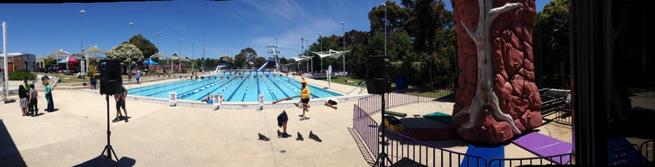
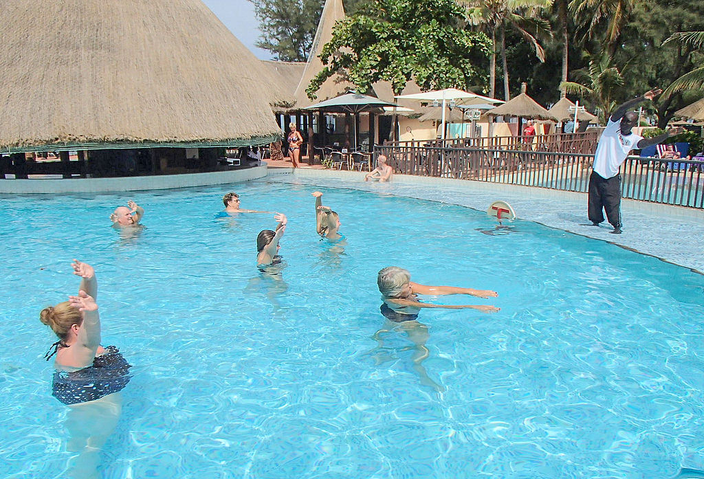

Når man tænker på at rejse ud i verdenen, opleve nye lande og se de lange, hvide sandstrande bliver de fleste nok afslappede og tænker på luksus - men sådan behøver det nødvendigvis ikke at være. Hvis du gerne vil ud at opleve verden, men ikke vil gå ned på den træning du har kæmpet så hårdt for, eller du gerne vil have lidt ekstra motivation til at få din ønskede bikini-krop, så skal du blot tage på et træningshotel i sydens sol.
Det kan du for eksempel i Fuertaventura på hotellet Playitas eller i de Forenede Arabiske Emirater på hotellet Fairmont Fujairah. Disse er blot to af mange sportsparadiser, både for garvede træningsfolk, såvel som almindelige sportsturister. Det er hoteller bygget i troen om at en aktiv ferie er sjov ferie.
På hotellerne er der mulighed for en bred vifte af sportsakitviteter som løb, svømning, wateraerobics, cykling, yoga, klatring, forhindringsløb, tennis, træningscentre og meget, meget mere.
Du skal selvfølgelig ikke være professionel atlet for at booke en aktiv ferie, det er også for dig der bare vil tilføje lidt træning til en ellers afslappende strand-ferie. Så pak du bare træningstøjet, løbeskoene og badetøjet og hop på et fly til et af de mange sportshoteller rundt om i verdenen.
